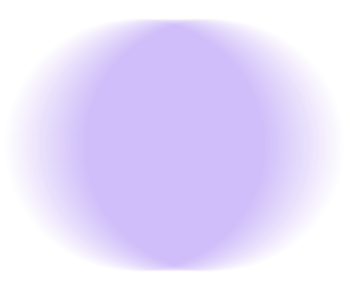

Cuando Nace Otra Madre
Una guía emocional para reconocer y acompañar la depresión postparto.
La Depresión Postparto
“Sentir que deberías estar feliz, pero no poder.” “Querer a tu bebé y, aun así, sentirte lejos de ti.” “Llorar sin entender del todo por qué.” “Pensar que quizá el problema eres tú.”
La depresión postparto es una forma de sufrimiento emocional que puede aparecer tras el nacimiento y que muchas madres atraviesan en silencio, no porque no duela, sino porque ocurre en un momento en el que casi todo alrededor parece esperar felicidad.

Dicen que cuando nace un bebé, nace también una madre. Pero no siempre se nace sabiendo cómo estar en ese nuevo lugar.
A veces, mientras todo alrededor se llena de cuidado y de vida, algo dentro queda en pausa. No porque falte amor, sino porque la mujer que eras y la madre que empiezas a ser necesitan tiempo para encontrarse.
Antes de vivirlo, ya existía una forma de imaginarlo. La alegría debía llegar, el amor debía ocuparlo todo, el instinto debía saber el camino. Pensaste, quizá, en una ternura capaz de ordenar el cansancio, el miedo y los días nuevos. Como si la maternidad viniera escrita de antemano y solo hubiera que entrar en ella.
Pero hay mujeres que llegan a ese lugar y descubren una distancia difícil de entender, sobre todo cuando todo alrededor parecía haber decidido por ellas cómo debían sentirse.
Y entonces llegan los días. Días que no se parecen a la imagen que habías guardado. Todo sucede como parecía que debía suceder: el bebé, la casa, los cuidados, las pequeñas rutinas. Pero por dentro algo no consigue ordenarse. Hay momentos en los que sonríes, respondes, sigues, haces lo que toca.
Y aun así, en algún lugar íntimo, aparece una sensación extraña: una manera de estar en la vida y, al mismo tiempo, sentirse lejos de ella.
A veces, lo más duro no es solo sentirse mal, sino empezar a creer que no deberías sentirte así. Que tendrías que poder más, disfrutar más, estar más presente, más agradecida, más entera.
Empiezas a medir lo que sientes contra lo que creías que deberías sentir, y en esa distancia todo se vuelve culpa. Como si no estar bien fuera una forma de fallar.
Basta una frase para que algo empiece a moverse por dentro: “creo que no estoy bien”. Al decirlo, algo que parecía vivir solo dentro de ti empieza a tener un lugar fuera. Lo que antes era confuso empieza a tomar forma; lo que antes era silencio empieza a encontrar una voz.
Decirlo puede ser el primer lugar donde el silencio empieza a convertirse en cuidado.

Hay cosas que no deberían sostenerse a solas. No porque no seas capaz, sino porque hay dolores que necesitan presencia, escucha y cuidado.
Cuando algo empieza a salir del silencio, también puede empezar a encontrar compañía. No para resolverlo todo de golpe, sino para que lo que dolía sin forma empiece a encontrar un camino.
Dudas y preguntas frecuentes
01 ¿Qué es la depresión postparto?
La depresión posparto es una forma de sufrimiento emocional que puede aparecer después de dar a luz. Puede manifestarse como tristeza, ansiedad, culpa, agotamiento, irritabilidad, desconexión o dificultad para disfrutar y vincularse como una imaginaba.
No es falta de amor, ni debilidad, ni ser mala madre. Es una condición real que merece ser reconocida y acompañada.
02 ¿La depresión posparto aparece justo después de dar a luz?
No siempre. Puede aparecer poco después del parto, pero también semanas o meses más tarde.
Por eso, a veces cuesta reconocerla: no siempre llega de golpe ni coincide con el momento en que una espera sentirse mal. Puede presentarse hasta un año después de dar a luz.
03 ¿Qué diferencia hay entre baby blues y depresión posparto?
El baby blues suele aparecer en los primeros días tras el parto y normalmente mejora en unas dos semanas. Puede traer llanto, sensibilidad, cambios de humor o dificultad para dormir.
La depresión posparto suele durar más, sentirse más intensa e interferir más en la vida diaria.
04 ¿Cuánto dura la depresión postparto?
Puede durar semanas o meses, y en algunos casos alargarse más si no se recibe ayuda adecuada. No hay una duración única: depende de cada mujer, de la intensidad del malestar y del apoyo profesional y personal que tenga alrededor.
No hace falta esperar a que “se pase sola”. Si lo que sientes se mantiene, crece o empieza a afectar a tu día a día, es recomendable consultarlo con una profesional.
05 ¿Cómo sé si lo que siento es depresión posparto o cansancio normal?
El cansancio del posparto suele fluctuar: puede mejorar algo con descanso, ayuda o momentos de pausa.
Cuando el malestar se mantiene, crece o afecta a tu forma de funcionar, conviene prestarle atención. No hace falta esperar a estar al límite para consultarlo.
06 ¿Puede manifestarse como ansiedad y no solo como tristeza?
Sí. En algunas mujeres se vive más como alerta que como tristeza: miedo, preocupación constante, tensión, irritabilidad, dificultad para descansar o necesidad de tenerlo todo bajo control.
Desde fuera puede parecer simplemente “estar muy pendiente”, pero por dentro puede sentirse como una tensión que no se apaga.
07 ¿Qué hago si no sé explicar exactamente lo que me pasa?
No tienes que saber explicarlo todo desde el principio. Una psicóloga perinatal está preparada para ayudarte a ordenar lo que ocurre, hacer las preguntas adecuadas y acompañar la conversación para que, poco a poco, pueda ir saliendo aquello que ahora cuesta poner en palabras.
08 ¿Qué tipo de profesional puede ayudarme en el posparto?
Lo más recomendable es contactar con una psicóloga perinatal, una profesional especializada en salud mental durante el embarazo, el posparto y la maternidad.
En la sección “Quiero ayuda” encontrarás una selección de psicólogas perinatales revisadas por la plataforma. Ofrecen una primera llamada sin coste de servicio, que no es una sesión de terapia, sino una valoración inicial para escucharte, resolver dudas y orientarte sobre si lo que estás viviendo puede necesitar terapia o una evaluación clínica más completa.
09 ¿Qué papel puede tener la pareja o el entorno cercano?
La pareja, la familia o las personas cercanas pueden ser muy importantes, porque muchas veces la madre no sabe cómo explicar lo que le pasa o no tiene fuerzas para pedir ayuda.
Acompañar no significa tener la frase perfecta. Significa estar disponible, escuchar sin juzgar, no minimizar lo que siente y ayudar de forma concreta: facilitar descanso, asumir tareas, cuidar al bebé un rato o acompañarla a buscar apoyo profesional si lo necesita.
La clave no es invadir ni decidir por ella, sino hacerle sentir que no tiene que sostenerlo todo sola.
10 He decidido buscar ayuda, ¿cuáles son los siguientes pasos?
Puedes contactar con una psicóloga perinatal desde la sección “Quiero ayuda”, donde encontrarás profesionales revisadas por la plataforma.
Podrás escribirles o solicitar una primera llamada sin coste de servicio. Esta llamada no sustituye una consulta terapéutica; sirve para hacer una primera valoración, resolver dudas y orientarte sobre si necesitas iniciar terapia o realizar una evaluación clínica más completa.
11 He decidido buscar ayuda, ¿cuáles son los siguientes pasos?
No. Esta herramienta no diagnostica.
Sirve para ayudarte a observar cómo estás viviendo el posparto, ordenar algunas señales y detectar si podría ser importante hablarlo con una profesional. El diagnóstico o la valoración clínica debe realizarlo una profesional especializada, como una psicóloga perinatal.
12 ¿Qué puedo hacer después de completar la herramienta?
Puedes leer el resultado como una primera orientación, no como una etiqueta.
Si te ves reflejada, puedes guardarlo, compartirlo con alguien de confianza o usarlo como punto de partida para pedir una valoración profesional.